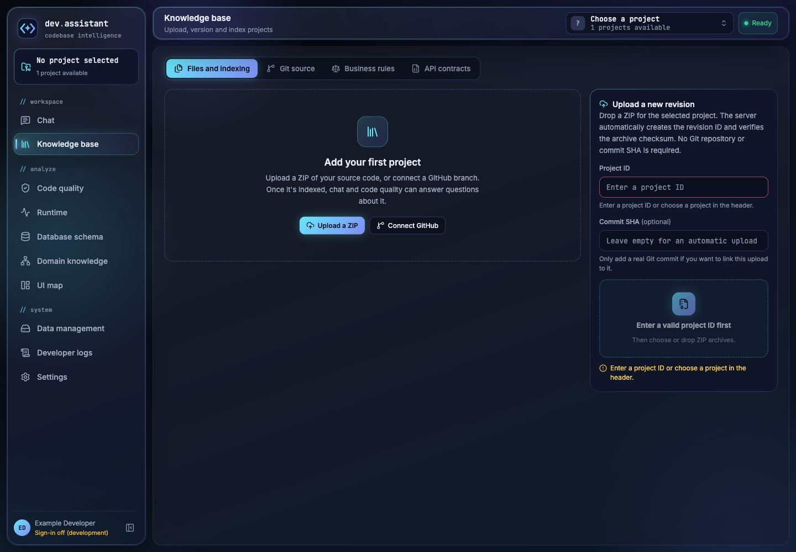
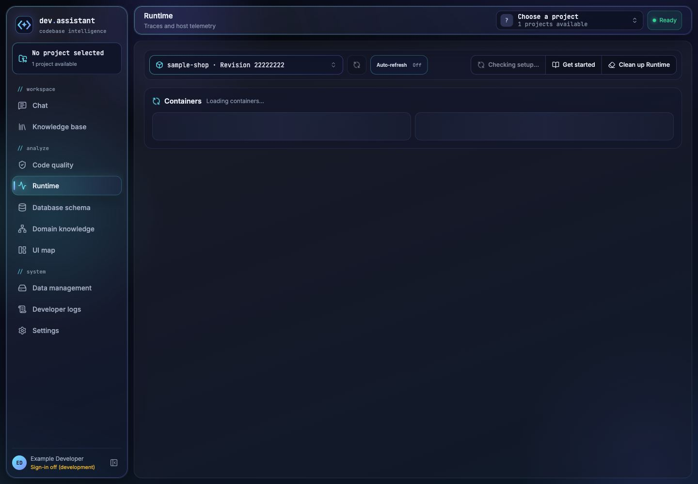
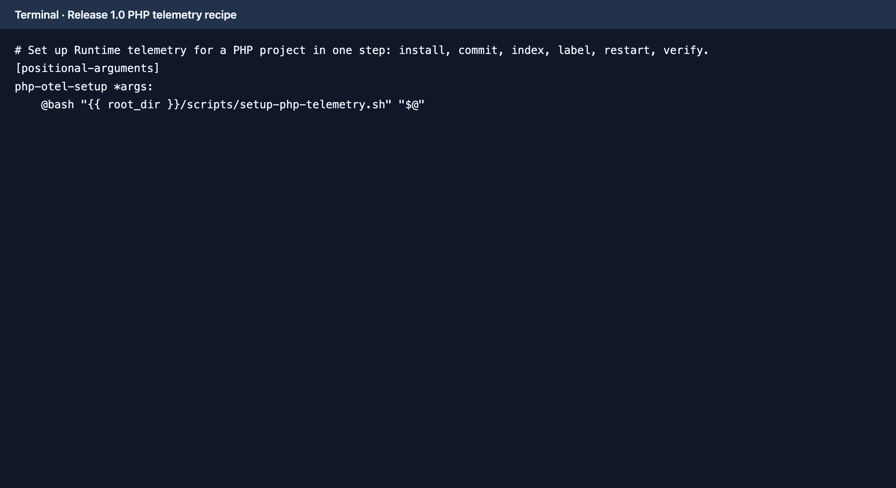
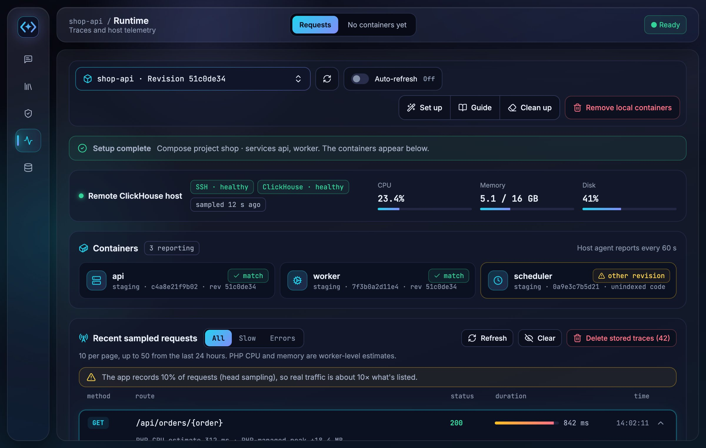
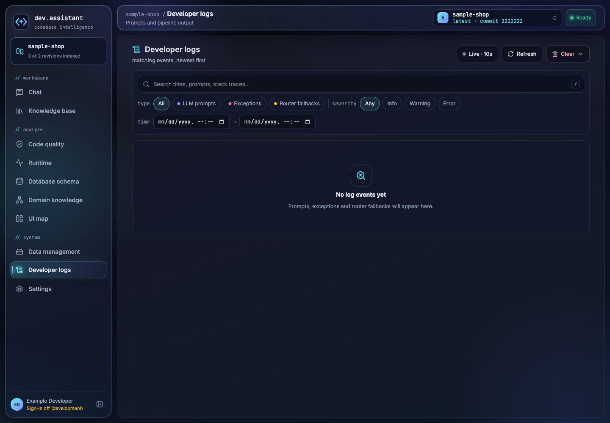

Prepare the indexed revision
- Upload and index the PHP project first, using the exact source commit that will run.

Knowledge Base: Files and indexing and the ZIP upload form. - Record the project ID and ready revision ID shown by the application.

Runtime project and revision picker. - Leave the target project running while the host agent reports its deployment.
View screenshot
Runtime project and revision picker.
One-step Docker Compose setup
just php-otel-setup ../my-php-appThe setup detects the PHP service, installs the adapter and exporter, writes telemetry values into the target project's environment, labels the Compose service, indexes the committed source, and waits for a matching deployment report. Review the plan before approving it.

Manual setup
- Start the Runtime collector and ClickHouse profile from
api.The Release 1.0 PHP telemetry setup recipe. - Configure the PHP OTLP HTTP endpoint:
http://127.0.0.1:24318for host PHP orhttp://host.docker.internal:24318from Docker Desktop. - Install the Laravel, Symfony, or core telemetry package in the target PHP project.
View screenshot
The Release 1.0 PHP telemetry setup recipe. - Set the project ID, revision ID, OTLP endpoint, service name, and resource attributes from the release guide.
- Generate normal, slow, and failing requests. Allow an aggregation cycle before checking the UI.
View reference screenshot

Example request details to check after telemetry arrives.


Read Runtime
- Open Runtime and select the matching project and revision.
Runtime project and revision picker. - Confirm the Containers panel shows the expected services and revision match.
View screenshot
Runtime project and revision picker. - Use All, Slow, or Errors to filter the recent sampled requests.
Runtime request details. - Open a request. Review duration, route, method activity, and the Database tab.
View screenshot
Runtime request details. - Look for repeated query shapes. A repeated shape can indicate N+1 work, but it is an observation, not a full SQL trace.
View screenshot
Runtime request details. - Use Explain with AI when you need a source-linked analysis. Use the diff preview only after reviewing the finding.
View screenshot
Runtime request details.
Sampling matters. Runtime may show only a share of traffic. The UI tells you the configured ratio when it is available.
If no requests appear
- Confirm the collector and ClickHouse services are running.
The Release 1.0 PHP telemetry setup recipe. - Confirm the PHP app reports the same project and immutable revision IDs as the indexed source.
Runtime project and revision picker. - Confirm
indexer.code_dirty=falseand the release telemetry schema version.View screenshot
Runtime project and revision picker. - Generate fresh requests and wait for aggregation.
- Check Developer Logs for provider, connection, or exporter errors.

Developer Logs filters.